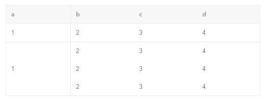

element合并单元格，自定义表格border
这篇文章发布于 2020/10/01，归类于 Vue
标签：
element合并单元格，element表格合并单元格
有个较为特殊的表格，需要合并单元格，且改变表格border，下面来看看element el-table怎么实现这种表格

先来分析下怎么做
- 第一列中第二行以后的行是需要合并的，el-table 提供了一个 span-method 属性，用于传入合并单元格方法，在里面可以根据 rowspan、colspan 合并行或列
- 第 2、3、4 列需要改变表格 border，需要使用
/deep/修改 element 默认的颜色，使用 nth-child、first-child 等找到对应的行或列，修改border
具体实现代码如下
<template>
<div class="table-test">
<el-table
:data="dataList"
border
size="mini"
:span-method="arraySpanMethod"
:header-cell-style="{ background: '#f7f7f7' }"
>
<el-table-column
v-for="item in ['a', 'b', 'c', 'd']"
:key="item"
:prop="item"
:label="item"
></el-table-column>
</el-table>
</div>
</template>
<script>
export default {
data() {
return {
dataList: []
};
},
mounted() {
this.dataList = [1, 2, 3, 4].map(() => {
return { a: "1", b: "2", c: "3", d: 4 };
});
},
methods: {
arraySpanMethod({ row, column, rowIndex, columnIndex }) {
console.log(row, column, rowIndex, columnIndex);
// 只是遍历表格td内容，不包含th表头
// 对第一列，进行合并列
if (columnIndex === 0) {
if (rowIndex === 0) {
// 第一列，第一行，默认
return {
rowspan: 1,
colspan: 1
};
} else if (rowIndex === 1) {
// 第一列，第二行，合并，占this.dataList.length - 1行
return {
rowspan: this.dataList.length - 1,
colspan: 1
};
} else if (rowIndex >= 2) {
// 第一列，剩余行，为空
return {
rowspan: 0,
colspan: 0
};
}
}
}
}
};
</script>
<style lang="less" scoped>
.table-test {
width: 500px;
margin: 100px;
// border处理
// 去掉表头单元格th右边框
/deep/ .el-table th:not(:first-child) {
border-right: 0;
}
// 去掉表格内容单元格td的右侧边框、底部边框
/deep/ .el-table td {
border-right: 0;
border-bottom: 0;
}
// 为第一行td增加底部border
/deep/ .el-table__row:first-child td {
border-bottom: 1px solid #eaeaea;
}
// 为第一行第一列td增加右侧border
/deep/ .el-table__row:first-child td:first-child,
// 为第二行（合并后的）第一列td设置右侧border
/deep/ .el-table__row:nth-child(2) td:first-child {
border-right: 1px solid #eaeaea;
}
}
</style>完整demo参见：element合并单元格demo | github